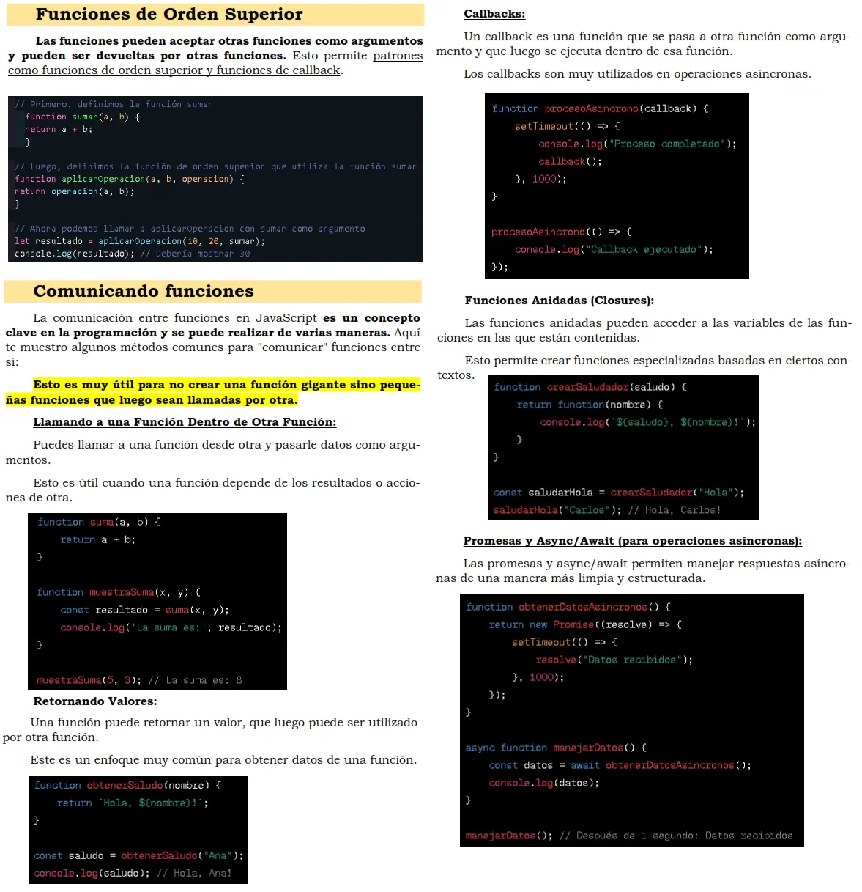

ESTRUCTURAS DE CONTROL CONDICIONAL - Aspectos clave
Cuando en programación hablamos de condicionales, hablamos de una estructura sintáctica que sirve para tomar una decisión a partir de una condición. Si <condición> entonces <operación>.
if ... else if ... else
Operadores lógicos y relacionales
Operador AND (&&) y Operador OR (||)
ifs anidados
Operador ternario
Swith
ESTRUCTURAS DE CONTROL ITERACTIVAS - Aspectos clave
Las estructuras de control iterativas, también conocidas como bucles (loops) o ciclos, son fundamentales en la programación. Permiten ejecutar un bloque de código repetidamente mientras se cumpla una condición específica.
El término "iterativa" en el contexto de la programación se refiere a un proceso o método que se realiza mediante la repetición de pasos o etapas. Cada repetición del paso o etapa se conoce como una "iteración".
FOR LOOP O BUCLE FOR
Break y continue
Iterar sobre datos (Arrays, Objects, etc.)
for ... of
for ... in
WHILE LOOP O BUCLE WHILE

DO WHILE LOOP O BUCLE DO WHILE
FUNCIONES - Aspectos clave
Son bloques de código diseñados para realizar una tarea específica. Son fundamentales en JavaScript para organizar y reutilizar código. Las funciones pueden ser invocadas (llamadas) tantas veces como sea necesario dentro de un programa.
Las principales ventajas del uso de funciones son:
- Evita instrucciones duplicadas (Principio DRY).
- Soluciona un problema complejo usando tareas sencillas (Principio KISS).
- Focaliza tareas prioritarias para el programa (Principio YAGNI).
- Aporta ordenamiento y entendimiento al código.
- Aporta facilidad y rapidez para hacer modificaciones.
FUNCIONES - Declarar (crear) y llamar (ejecutar) funciones
FUNCIONES - Parámetros y Argumentos
FUNCIONES - Return
Una función puede devolver un valor (hacia afuera de la función) usando la palabra clave return.
Si quiero utilizar el valor devuelto con return fuera de la función, debo asignarlo a una variable.
¿Hacia donde se retorna el valor? Hacia la invocación.Funciones de orden superior - Comunicación entre funciones
Arrow functions
Añadir funciones a un objeto (métodos)